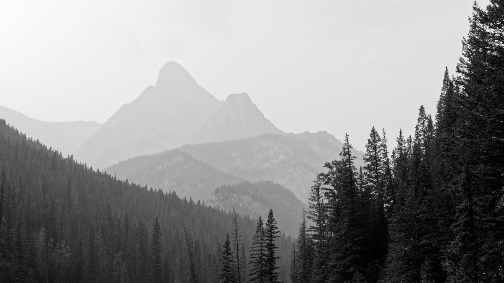
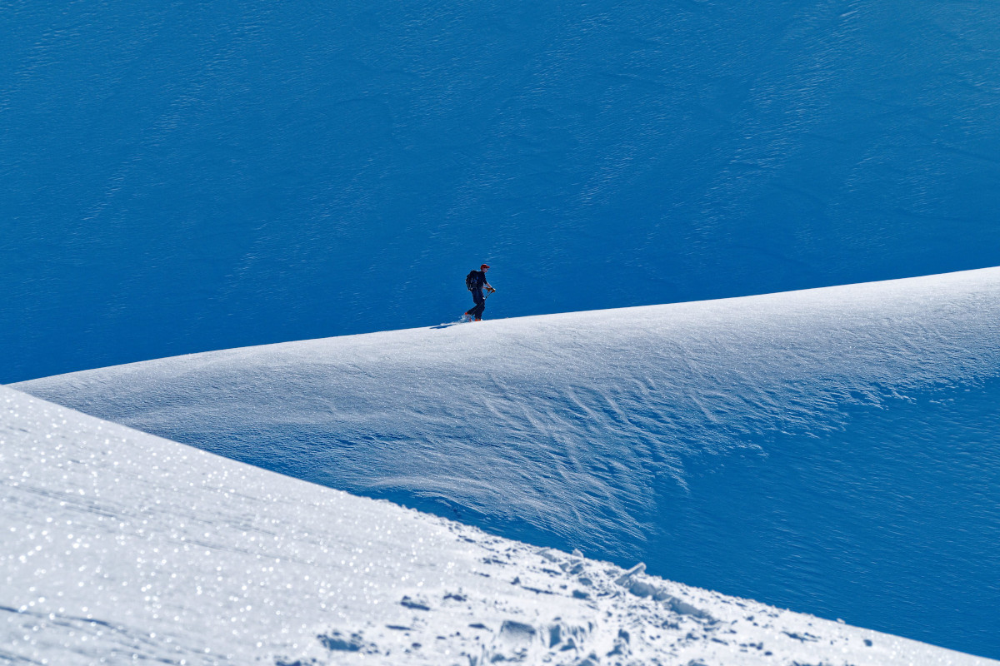
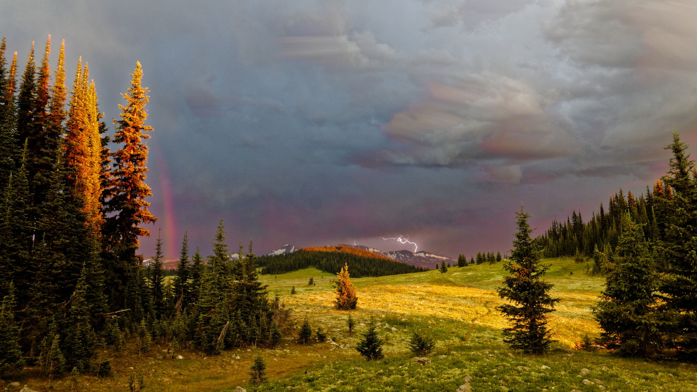
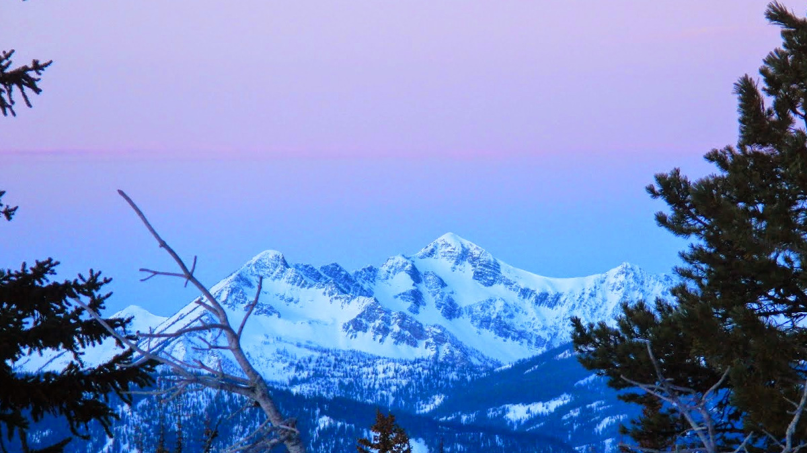
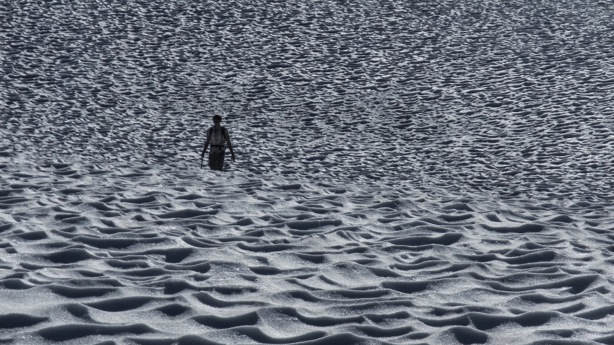
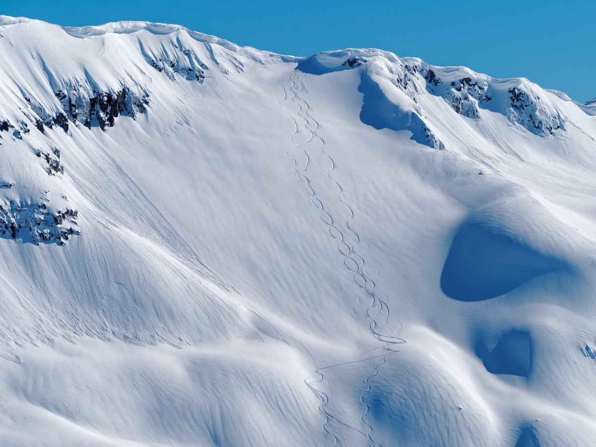
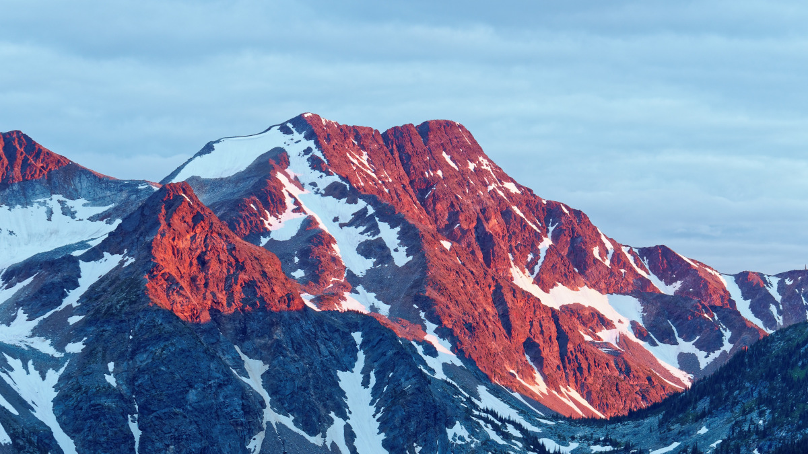

We might as well start at the beginning...
I grew up in Calgary where I was happiest outdoors. I learned to love the mountains and all the activities I found there.
Mt Fable through the smoke.
In my early teens my father introduced me to climbing mountains and since then standing on top of peaks is something I am willing to suffer for to experience. Now in my late 30's I have climbed more peaks than I can recount, have hiked thousands of kilometers with a heavy pack, and have found no reason to stop.
My second long-time love is skiing in all it's forms. I am an expert downhill, reasonably strong cross-country, love exploring on touring skis, and have enjoyed many years working as a Ski Patroller at resorts near Vancouver
The simple beauty in snowy landscapes.
While living in Calgary I completed a bachelor's degree in Applied Policy Studies at Mount Royal University and then quickly decided I didn't yet want a career that kept me sitting at a desk. I took up carpentry with a long time master craftsman and learned valuable skills that extend well beyond carpentry; it is the job that taught me the value of my meticulous nature, and the need to proceed through complicated tasks carefully when quality is of utmost importance.
When my partner decided to work on a degree at the University of BC I certainly couldn't let them go alone so I moved to Vancouver too. That was 12 years ago and while we have had our issues with the housing market living in the lower mainland (who doesn't?), we now reside in New Westminster.
Fight Meadow at it's best.
At a point while living in Squamish -- but after forming a deep respect for everyone who earns a living driving a taxi -- I discovered the Wilderness Leadership Program offered by Caplilano University. Knowing leadership training would be a valuable addition to my skillset I enrolled, completed the degree, and was working soon after guiding hiking trips in the summer and working ski patrol in the winter.
However after the birth of my first child, I really didn't want to spend upwards of 6months of the year away from my family, so a change was needed.
Up before the sun on Mount Chuwanten.
Before we get to my current situation I should fill in the picture of 'who I am' a bit. Since I run out of food every time I go to the mountains for fun, and life has that pesky way of happening, I do have other hobbies more readily accomplished in an urban setting.
These include:
Video Games -- I am a connoisseur who enjoys most categories of games; some of my current favorites include: Katamary Damacy, Breath of the Wild, Shadow of the Colossus, Untitled Goose, and Ni No Kumi.
Photography -- My photography experience is quite extensive. I learned shooting black and white film on a camera my Grandpa handed down to me, sharpened my skills shooting slide film, and have adapted my skills to the modern world brought about by digital cameras and the software darkroom.
RC vehicles -- which these days is mostly small (less than 250g) helicopters. I seem to spend more time tinkering and repairing than flying, which is to say I crash a lot.
Taking continuity holes to extremes -- toddler television creates a lot of continuity holes and I enjoy speculating around these missing pieces. Ask me about Paw Patrol if you want to waste half an hour. More relevant here is my love of theorizing within a created world's parameters; what are the logical implications of the world's mechanics, characters, and systems? Whatever the medium -- books, games, television, movie -- I enjoy exploring the edges of ideas and especially analyzing systems. It's the policy wonk in me, I can't help it.
So, what you may ask, does any of this have to do with my professional nature?
Endless sun-cups on Sky Pilot Mountain
I recognize that many of the hard skills associated with mountain travel (fitness, agility, technical knowledge) have little value in most workplaces.
But a lot of what I have learned in the mountains is directly applicable to the workplace. To travel safely in the wilderness requires careful planning as preparation is a key factor in success (as it is in anything); but it also requires a readiness to improvise as even the most thorough plans will encounter surprises. Not only am I great at breaking down large projects into discrete pieces, I also excel at solving problems on-the-fly with limited available resources.
Further mountains are enormous things, but there is nothing more to it than putting one foot in front of the other most of the way up and down. Being able to envision a desired outcome and continue forward one step at a time even if the end is nowhere in sight is an act of patience I apparently do for fun. This is how I have tackled lengthy policy reviews, organizing remote trips, cleaning out the garage, and any other large tasks in my life.
Video games have taught me to carefully consider the problem at hand and use the tools at my disposal in creative ways. While photography has taught me the value of changing perspective, no matter how happy you are with a current solution.
As for skiing, the mountains are particularly beautiful in the winter and, well, skiing is fun.
Turns down north face of Long Mountain.
Before the pandemic I was driving a school bus route as a way to stay closer to home, help look after a little person, and take some time to consider where I want to move with my career.
As an avid video game player I have always had dreams of getting involved in their creation, however my grandest dream would be the creation of an "Illustrated Primer for Girls" to revolutionize education (and not just for girls). There are many products on the market that aim to educate, but none have met my aspirations.
Since dreams like that do not create themselves I decided some formal education in software design would be a good first step.
Raft Mountain at sunset.
Thus I enrolled in the Information and Communication Technology program at Douglas College, which includes courses in software engineering, database design, and project management. Now that I am nearing completion of this program I can better see how it has given me a strong jumping-off point for a career creating software.